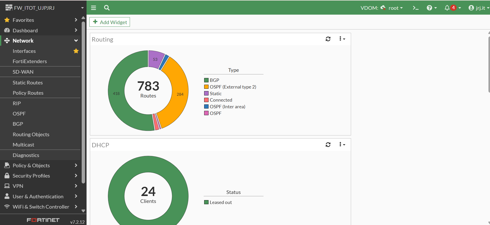
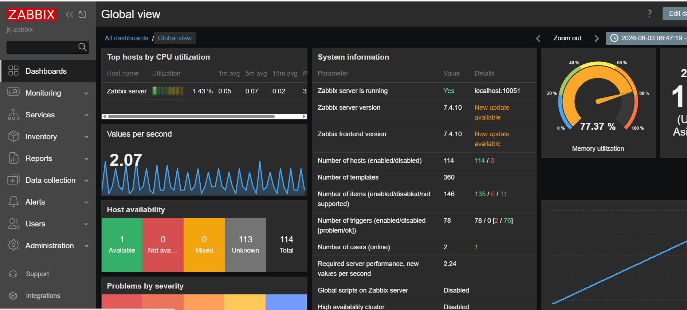
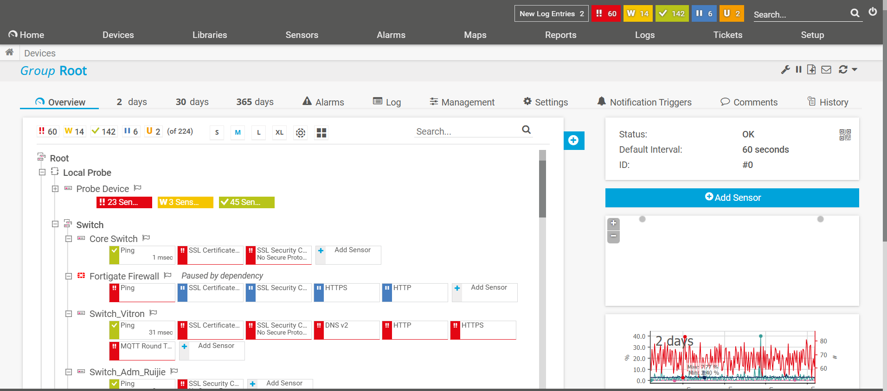

Halo, saya
Specialist Perencanaan Arsitektur TI dengan pengalaman dalam perancangan, implementasi, dan monitoring infrastruktur jaringan serta sistem keamanan perusahaan.
Saya adalah seorang Specialist Perencanaan Arsitektur TI dengan pengalaman dalam merancang, mengimplementasikan, dan mengelola infrastruktur teknologi informasi yang scalable, aman, dan efisien.
Berfokus pada Network Security, System Monitoring, dan IT Infrastructure Planning, saya telah menangani berbagai proyek mulai dari deployment firewall enterprise, implementasi sistem monitoring jaringan, hingga optimasi arsitektur TI untuk mendukung kelangsungan bisnis.
Dengan pemahaman mendalam terhadap teknologi seperti FortiGate, Zabbix, dan PRTG, saya berkomitmen untuk menghadirkan solusi TI yang tidak hanya memenuhi kebutuhan saat ini tetapi juga siap menghadapi tantangan masa depan.
Tahun Pengalaman
Proyek Network Security
Infrastruktur Dikelola
Sertifikasi TI
Firewall management, IPS/IDS, VPN, dan kebijakan keamanan jaringan enterprise.
Implementasi dan konfigurasi Zabbix, PRTG, serta dashboard monitoring real-time.
Perancangan topologi, subnetting, routing, dan optimasi infrastruktur jaringan.
Deployment, konfigurasi, dan troubleshooting perangkat firewall Fortinet.
Monitoring server, jaringan, dan aplikasi menggunakan platform Zabbix.
Network monitoring multi-sensor, alerting, dan reporting dengan PRTG.
Perencanaan kapasitas, disaster recovery, dan dokumentasi arsitektur TI.
VMware, Hyper-V, dan layanan cloud untuk infrastruktur hybrid.

Konfigurasi dan monitoring firewall FortiGate untuk keamanan jaringan enterprise dengan policy management & threat prevention.

Implementasi sistem monitoring terpusat menggunakan Zabbix untuk server, jaringan, dan aplikasi dengan alerting real-time.

Deployment PRTG Network Monitor untuk multi-sensor monitoring bandwidth, uptime, dan performa infrastruktur jaringan.
Merancang arsitektur TI enterprise, mengelola keamanan jaringan, dan memimpin implementasi sistem monitoring infrastruktur.
Mengelola firewall FortiGate, menerapkan kebijakan keamanan, dan melakukan audit infrastruktur jaringan secara berkala.
Bertanggung jawab atas monitoring infrastruktur menggunakan Zabbix & PRTG, serta optimasi performa jaringan.
Memulai karir di bidang jaringan dengan menangani administrasi network harian dan dukungan teknis infrastruktur.
Saya terbuka untuk diskusi, kolaborasi, dan peluang baru. Jangan ragu untuk menghubungi saya melalui email atau LinkedIn.
Indonesia